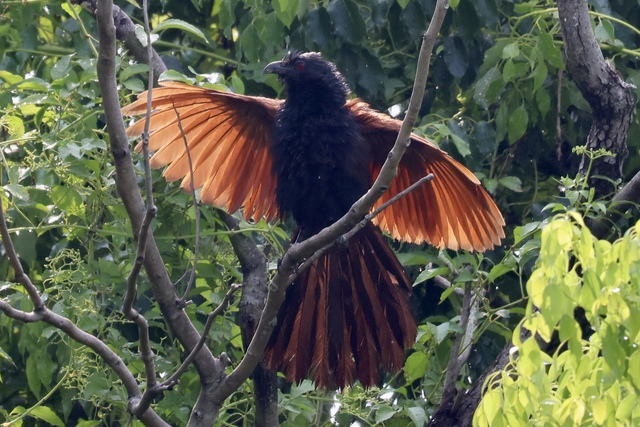

Greater Coucal
Centropus sinensis
Order: Cuculiformes
Family: Cuculidae

A crow-like, scruffy black coucal with chestnut wings. Red eyes and thick bill. I am lucky to see this one sunbathing after a shower.
Order: Cuculiformes
Family: Cuculidae

A crow-like, scruffy black coucal with chestnut wings. Red eyes and thick bill. I am lucky to see this one sunbathing after a shower.
The Greater Coucal has red eyes and a thick bill. Compare with Lesser Coucal with dark eyes and a smaller bill.
A deep, resonant GooGooGooGooGoo...